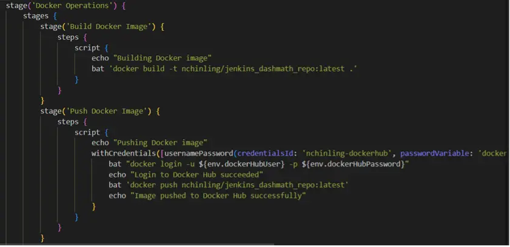
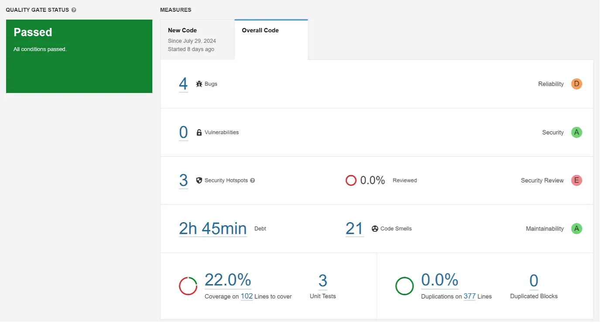
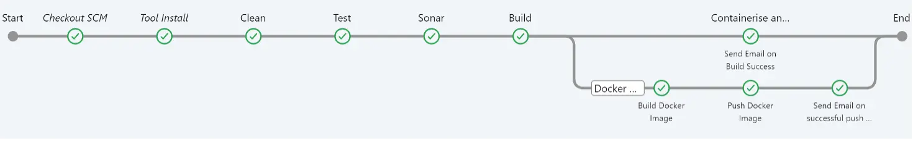
Jenkins is an open-source automation tool (server) which supports Continuous Integration (CI) and Continuous Delivery / Deployment (CD) processes in software development. It automates parts of software development such as building, testing and deploying. The various parts are configured in Jenkins 'jobs' such as 'freestyle' and 'pipeline'. When these jobs are run, an instance of the job, known as a 'build' is created. This projects explores CI/CD through the use of Jenkins.
The Jenkins job created for the assignment is called 'jenkins-project-dashmath'. The job is configured with the following properties:
The build is triggered by polling the Source Code Management system, specifically Git. It is configured to poll GitHub every minute using a CronJob. Scheduling the Jenkins job to poll GitHub every minute is resource-intensive and may not be efficient, as it is unlikely that developers push new changes to the SCM that frequently. A more efficient solution would be to use a GitHub webhook trigger, which starts a build only when new code is pushed to GitHub. However, for this option to work, the Jenkins server must be hosted with a valid IP address. This ensures that GitHub can send HTTP POST requests to the Jenkins server when changes are pushed to the repository.
Since the job item is a 'Pipeline', it requires a script to define how the pipeline should be built. This script can be written directly in Jenkins or pulled from a GitHub repository. The latter approach is more commonly used because it allows for version control and easier collaboration among team members.
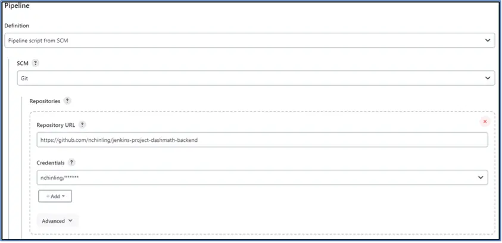
This setting informs Jenkins which branch to build as there may be multiple branches in the repository. In this case, it is configured to build the repository's main branch.
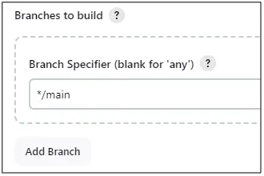
The script path provides the path of the script to Jenkins. In this case, it is set to JenkinsFile (name of the file in the root folder). The lightweight checkout option enables Jenkins to retrieve only the necessary files such as the pipeline script to configure the pipeline. Once the pipeline configuration is evaluated, a full checkout of the repository is still required to build the project.
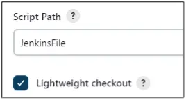
The job is scripted in a Jenkinsfile with the following pipeline flow:
The sequential pipeline branches into a parallel pipeline after the project is built. The first parallel pipeline sends an email to the user informing that the project has been successfully built. The second parallel pipeline builds a Docker image and pushes it to the Docker Hub public repository. At the 'post' stage, an email is sent in the event any of the pipeline stage fails.
Description of Pipeline stages (Part 1)
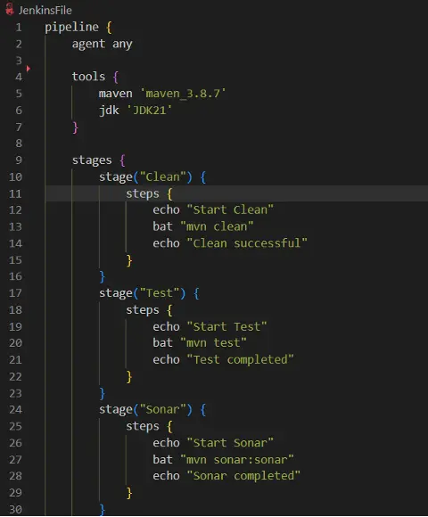
The pipeline is written declaratively using a simple and structured syntax. It uses a Maven version configured in Jenkins' global settings and Java version 21, as a version higher than Java 11 was used to meet the web application's needs. The stages created are as follows:
Jenkins runs the 'mvn clean' command which deletes the 'target' directory. The 'target' directory stores the generated compiled files. Deleting the 'target' directory ensures each build starts with a clean slate.
Jenkins runs the 'mvn test' command which is used to run the test cases of a Maven project. It compiles and executes the tests and generates test reports. In this assignment, the test cases are written in JUnit.
It runs the 'mvn sonar:sonar' command is used to run SonarQube analysis. SonarQube is used to perform static code analysis such as bugs, code smells, security vulnerabilities and code coverage. The results of the analysis are sent to a SonarQube server. In this assignment, the SonarQube server has been configured in Jenkins and is hosted locally by running the StartSonar.bat file. The SonarQube server provides a web interface for viewing the reports, while static analysis is performed by a plugin specified in the web application's pom.xml file. Note that the SonarQube server is configured to run with Java 11 (specified in the 'Path' directory) while the web application runs with Java 21. Both Java versions are available in the user's Java program folder.
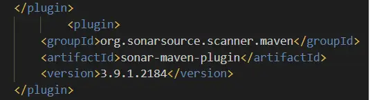
Jenkins runs the 'mvn install -DskipTests' command to build and prepare the project for deployment. The -DskipTests flag is used because the test stage has already been executed earlier in the pipeline.
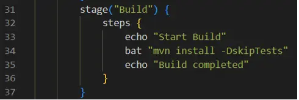
Description of Pipeline stages (Part 2)
After the project has been built successfully, the Jenkins pipeline branches into two parallel tasks, one for building the Docker image and another for notifying the user of the successful build via email.
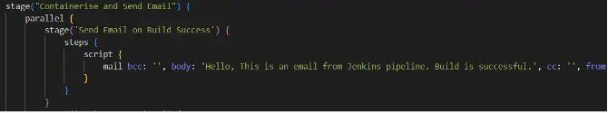

The email settings has been configured in Jenkins globally to use Google’s Gmail. It specifies the SMTP server address as ‘smtp.gmail.com’, uses SSL (Secure Sockets Layer) instead of TLS (Transport Layer Security) with port number 465. To enable Jenkins to send an email using Gmail, it requires a custom password generated in Google.
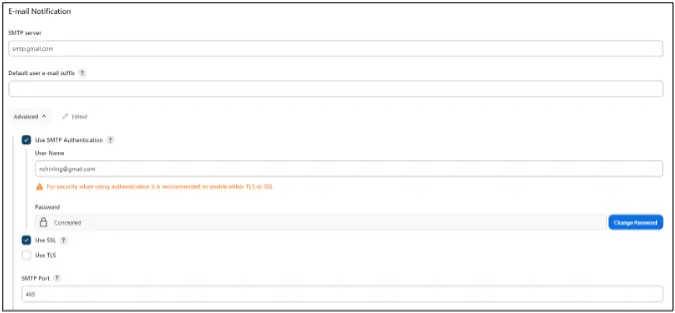
The second stage task in the parallel stage, ‘Docker Operations’, builds the Docker image and pushes it to Docker Hub, an online centralised repository. The command 'docker build -t nchinling/jenkins_dashmath_repo:latest .' tells Docker to build an image from the Dockerfile in the current directory (.) and tag (-t) it with the name nchinling/jenkins_dashmath_repo:latest. It is the image name that will be seen in Docker Hub.
After building the image, Jenkins pushes the image to Docker Hub using the Docker Hub log in details which have been configured in Jenkins Credentials settings. Finally, it notifies the user of the successful push via email.
Description of Pipeline stages (Part 3)
The 'post' section is the last snippet of code in the JenkinsFile. It is configured to send a notification to user in the event of failure at any of the stages.
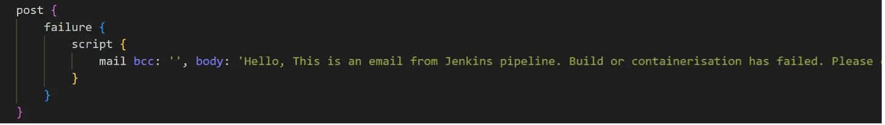
The table below shows the types of email sent for the different scenarios:
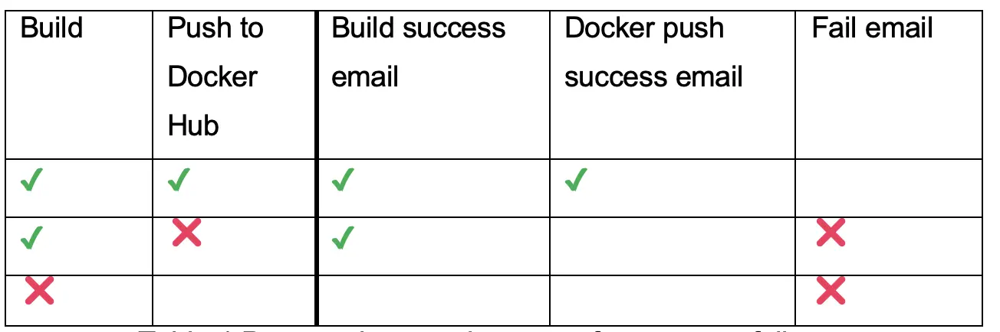
Results
The diagram below shows the build outcome for the configured job created in the JenkinsFile. The 'post' stage was not executed as it did not encounter a build failure.
The business world is ever-evolving, with new technologies coming into the foray every few years. It is quintessential that businesses respond and adapt to them, or risk losing out their business to competitors and be wiped out. The applications that drive their operations serve as a reflection of how well businesses leverage technology.
Before the advent of DevOps, development (creating applications) and operations (supporting and deploying them) teams operated in silos. It was a painful and laborious process as it required excessive manual work and incessant communication to drive the project, resulting in deliveries which frequently failed to meet business needs. Often, businesses are lost to competitors, not to mention, damaged reputations which have lasting impacts.
Born out of empiricism, experience, and necessity, the idea of DevOps began to take shape in the 2000s. It was officially conceptualised in 2009 by Patrick Debois, who also initiated the first DevOpsDay. This event sparked a wave of adoption among companies that had been using traditional methods of software development. Today, DevOps is a mature and evolving philosophy, embraced and adapted in various forms by organisations worldwide. The 2024 edition of DevOpsDays took place in a few countries including Singapore, reflecting the continued relevance and impact of DevOps.
This project of creating a CI/CD pipeline with Jenkins exemplifies how the philosophy of DevOps philosophy can be implemented in practice. Instead of having development and operations teams work in silos, DevOps removes the barrier between these two crucial components. DevOps speeds up development and its subsequent operations to create an error free, valuable and deployable software product. Each stage of the Software Development Life Cycle (SDLC) is completed in a fraction of the time it would typically take using traditional methods.
This approach translates into significant cost savings and faster deployments, which in turn enhance an organisation's ability to respond swiftly to market changes. By reducing the time-to-market, businesses can more effectively capture emerging opportunities and outpace competitors. DevOps drives business growth, ensuring organisations remain competitive in an ever-evolving landscape.
There is no fixed approach approach to creating the flow of a Jenkins job. It varies depending on the technical requirements and organisational needs. Additionally, there are numerous DevOps tools available for different stages of the Software Development Life Cycle (SDLC). While proficiency in these tools is valuable, the key to success lies in understanding the role of DevOps and how its principles can be effectively adopted within the organisation. This understanding will guide DevOps engineers in making informed decisions, optimising workflows and driving continuous improvement.
The following video demonstrates the implementation and execution of the Jenkins pipeline.